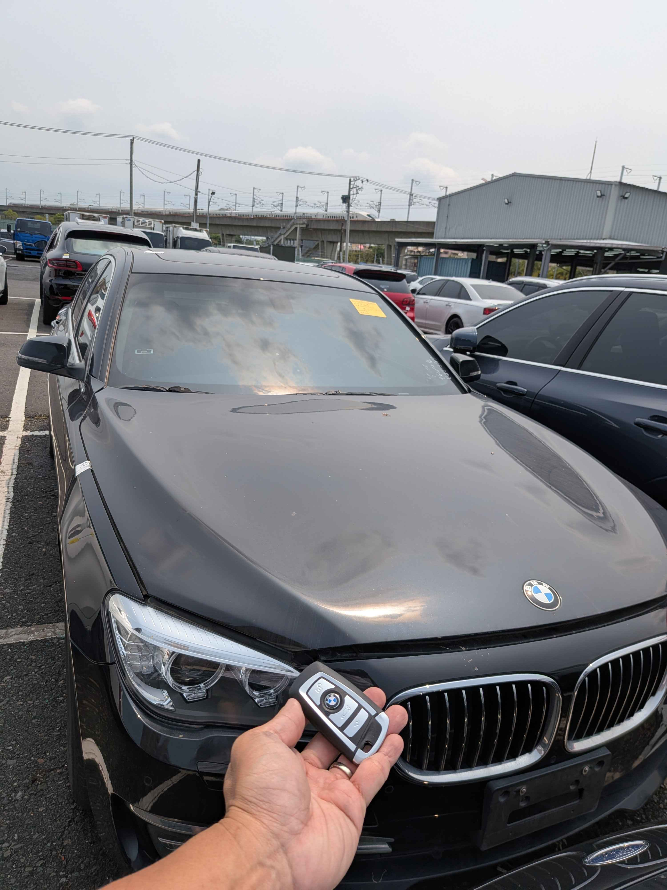

【高雄拍場】2014 BMW 730d (F01 LCI) 智能鑰匙全丟救援：現場數據重構實錄
LOCATION: 高雄汽車拍賣場
SYSTEM: CAS4+

今日接到緊急委託，前往高雄大型汽車拍賣場救援一台 2014 年款的 BMW 730d (F01 LCI)。該車為拍賣場剛得標之車輛，現場處於「智能鑰匙全數遺失」狀態，無法啟動且拖吊困難。
技術挑戰：CAS4+ 高階安全防盜
2014 年後的 7 系列小改款普遍搭載 CAS4+ 系統。在拍賣場有限的時間與窄小的空間內，回原廠更換整套電腦模組並非首選。極致核心團隊憑藉專業設備與現地數據重構技術，直接於現場進行解碼。
無需拖吊
直接於拍場車位現地作業，保護愛車外觀無損
數據重構
專業設備安全讀取加密數據，精準匹配全新鑰匙
完美同步
Comfort Access 舒適進入與一鍵啟動功能完全復原
救援成果
現場耗時約 60 分鐘，成功配製兩把全新智能鑰匙。車主順利將得標車開離拍場，省下了昂貴的原廠更換費與漫長的等待期。這就是極致核心對技術與效率的堅持。